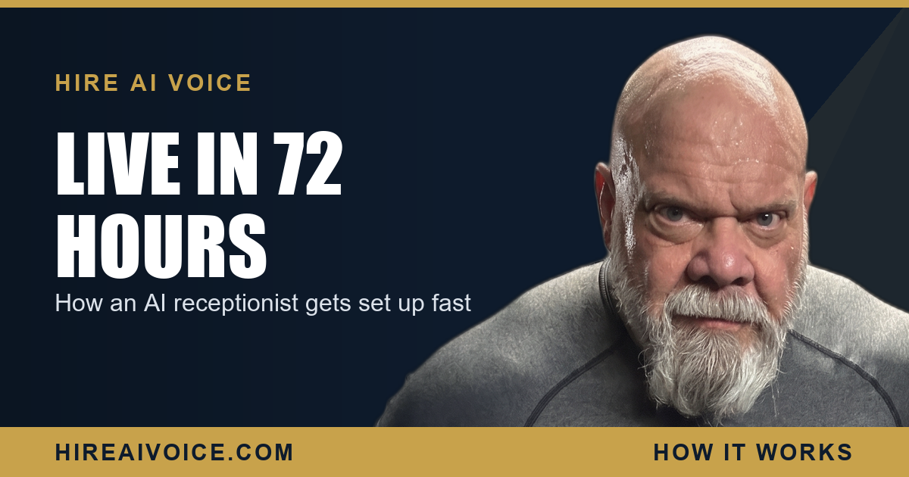

How an AI Receptionist Gets Set Up and Live in 72 Hours

The Short Version
- AI receptionist setup is one 30-minute onboarding call about your services, pricing, common questions, and how you book appointments.
- We build your agent from that conversation, then test it against real call scenarios before it ever touches your line.
- It goes live on your existing number in 72 hours, often 48. No new number, no hardware, no scripts to write.
- The total effort on your side is one short conversation and a quick review. That is it.
How Do You Set Up an AI Receptionist?
You set up an AI receptionist with one 30-minute onboarding call, and we handle the rest. That call is the whole job on your end. We walk through what you do, what you charge, the questions your customers ask most, your service area and hours, and how you want appointments booked. From that single conversation, we build the agent, test it, connect it, and turn it on.
I have spent 27 years in Santa Clarita real estate, and before that I wore a badge with the LAPD and worked corrections. I have sat across from a lot of busy people who assumed any new system meant weeks of headaches. This is the opposite. You answer the questions you already know the answers to, and you go back to work. We do the building.
What Happens on the 30-Minute Onboarding Call?
On the call we pull out everything your AI receptionist needs to sound like your business. It is a normal conversation, not a tech setup. We cover five things:
1. Your services. What you do and what you do not do, so the agent never books a job you do not take.
2. Your pricing. Flat rates, ranges, trip fees, or "we quote on site," whatever is true. The agent handles price shoppers the way you would.
3. Your FAQs. The questions you answer ten times a day. Hours, service area, do you offer free estimates, how soon can you come out. We load the real answers.
4. Your booking process. How you want appointments set, what you need from the caller, and how it lands in front of you so you just show up to the job.
5. Your voice. How you greet people, the name they should hear, and the tone that fits your business.
Thirty minutes. That is the entire information transfer. You will spend more time picking lunch.
What Do I Need to Provide?
Only the answers you already carry in your head. There are no scripts to write, no software to learn, and no equipment to buy. You do not need a tech person. If you can describe your business to a new employee on their first day, you can set up an AI receptionist, because that is exactly what the onboarding call is.
If you can train a new hire in half an hour, you can launch this in half an hour.
You also keep your phone number. The AI receptionist works with your existing line, so nothing about your truck wraps, your business cards, your listings, or your ads has to change. Your customers call the number they already know, and now someone always answers.
How Is the Agent Built and Tested?
After the call, we build your agent and run it through real call scenarios before it ever touches your line. This is the part owners do not see, and it is where the quality comes from. We do not hand you a raw bot and wish you luck. We pressure-test it first.
We throw the hard calls at it: the price shopper who wants a number before anything else, the emergency at 9 PM, the caller who rambles, the one who asks a question three different ways. We confirm the agent answers correctly, qualifies the lead, and books the appointment the way you asked. Then you review it. You hear it handle your own scenarios, and you approve it before a single real customer reaches it. If something is off, we adjust it. No live customers are guinea pigs.
How Long Until It Goes Live?
72 hours from your onboarding call, and often 48. There is no long install and no weeks of configuration, because the 30-minute interview already gave us what we need. We build and test over the next day or two, you review it, and it goes live on your existing number.
The day it goes live, every inbound call gets answered, day or night. It greets the caller by your business name, answers their questions, qualifies what they need, books the appointment, and follows up. This is what an AI voice agent actually does on a call, running the instant it turns on with no ramp-up period.
What Does It Cost and Is There a Contract?
Plans start at $297 a month, with a $497 tier for higher volume, and there are no contracts. You are not signing a year of your life away to find out if it works. You go live in 72 hours and you keep it month to month because it earns its keep, not because a contract traps you. If you want the full breakdown against what one missed call costs you, the pricing math is laid out here.
For service businesses across Santa Clarita and Los Angeles County, that is the trade: one short call, a couple of days of building and testing on our side, and then a receptionist that never sleeps, never calls out, and never lets a lead hit voicemail. The effort on your end is almost nothing. The gap it closes is almost everything.
Get Set Up This Week
One 30-minute call and your AI receptionist is live in 72 hours, often 48. Answers every call 24/7, books the job, follows up automatically. $297/month, no contracts. Or call Sarah, our live agent, and hear it yourself.